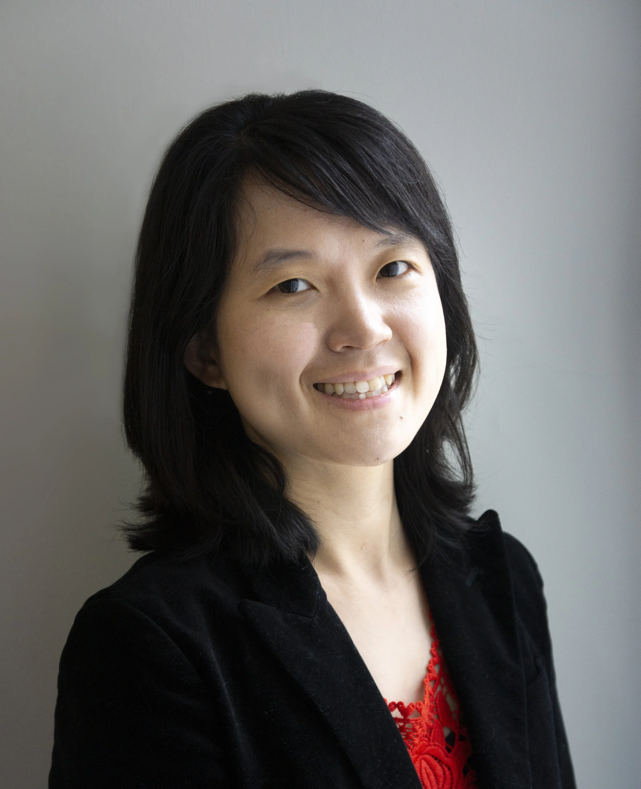

Anna S. Nam, MD - Principal Investigator
Assistant Professor of Pathology and Laboratory Medicine, Weill Cornell Medicine
Assistant Professor of Cell and Developmental Biology, Weill Cornell Medicine
Assistant Pathologist, Molecular Hematopathology, New York Presbyterian Hospital
MD, University of Missouri, 2008 - 2014
HHMI-NIH Research Scholar, 2011 - 2013
Anatomic Pathology Resident, Weill Cornell Medicine, 2014 - 2018
Hematopathology Fellow, Weill Cornell Medicine, 2016 - 2017
Clinical Research Fellow, Weill Cornell Medicine and New York Genome Center, 2017 - 2018
Molecular Genetics Pathology Fellow, Weill Cornell Medicine, 2018 - 2019
Instructor of Pathology, Weill Cornell Medicine, 2019 - 2020